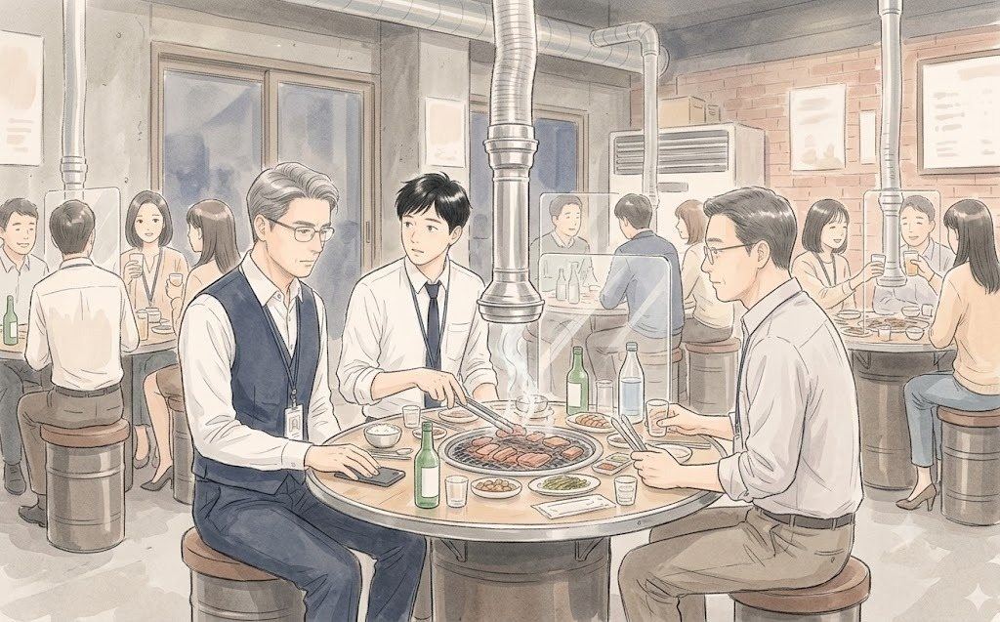
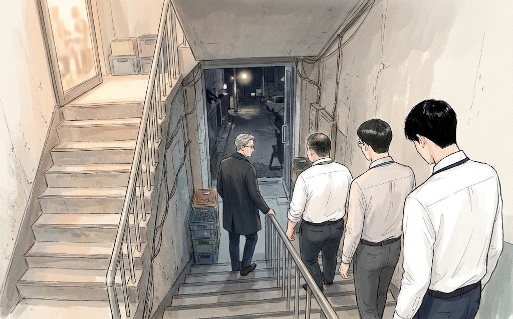
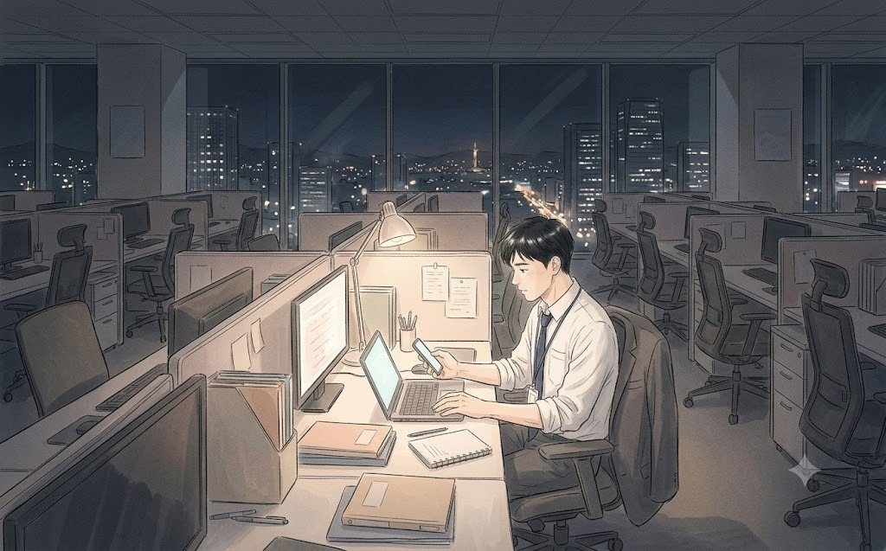

2021년 3월, 금요일 저녁 7시.
성수동 숯불구이집 「화로담」 2층은 테이블마다 정확히 네 명씩 앉아 있었다.
회사는 광화문에 있었다. 청연타워. 그런데 회식 장소는 늘 성수동이었다. 요즘 젊은 직원들은 광화문 고깃집에서 회식하면 회사 연장 근무 같다고 했다. 백승원이 그 말을 듣고 장소를 옮겼다. 그는 그런 걸 듣는 사람이었다.
"거기 다섯 번째 분! 옆 테이블로 가세요. 아뇨, 차장님 말고 그 옆 분이요."
이우진은 출입문 앞에서 명단을 들고 사람들을 갈라 앉히고 있었다. 온라인전략사업그룹 서른한 명. 넷씩 나누면 일곱 테이블에 세 명이 남았다. 남는 세 명을 어디에 붙일지, 그는 지난 사흘 동안 엑셀 파일을 열한 번 고쳤다.
예약은 테이블마다 다른 사람 이름으로 했다. 영수증도 따로 끊기로 했다. 5인 이상 사적 모임 금지. 회식이 사적 모임인지 업무인지는 아무도 정확히 몰랐지만, 회사의 답은 간단했다.
'4인 이하로 나눠 앉을 것. 테이블 간 이동 금지.'
"이 과장, 이거 완전 독서실이네."
데일리뷰티사업부 조영석 부장이었다. 헤어·바디 브랜드 '슬로워시'의 이커머스를 맡은 사람. 같은 층을 쓴다는 이유로 '게스트' 자격으로 끼어든 사람. 그는 앉자마자 주변을 둘러보며 혀를 찼다.
"우리 집이 다섯 식구야. 그럼 나는 집에서 밥도 못 먹는 거야? 하긴 우리 단지 커뮤니티 식당도 문 닫았어. 단지가 좋으면 이럴 때 손해라니까."
아무도 묻지 않은 단지 이야기였다. 이우진은 웃으며 그를 창가 테이블로 모셨다. 창가는 환기가 잘됐고, 무엇보다 다른 테이블과 가장 멀었다.
7시 10분. 백승원 부장이 일어섰다.
"자, 다들 잔 들어. 테이블 넘어오지 말고, 그 자리에서."
서른한 개의 잔이 일곱 개의 섬에서 동시에 올라갔다. 건배를 하려면 옆 테이블을 향해 팔을 뻗어야 했는데, 1미터 간격 때문에 잔끼리 닿지 않았다. 누군가 허공에 잔을 부딪는 시늉을 했고, 웃음이 번졌다.
"작년 한 해 고생 많았다. 올해는 우리가 숫자로 한번 보여주자. 대신 오늘은 숫자 얘기 금지. 위하여!"
"위하여!"
백승원은 그런 사람이었다. 사람을 먼저 보는 사람. 백화점 바이어로 십 년, 청연에 와서 또 십 년. 그는 회식 자리에서 아무리 꼬인 일도 소주 한 병이면 풀었다. 그런데 올해는 그 한 병을 나눠 마실 사람이 넷으로 제한됐다.
옆 테이블에서는 신입 나서현이 휴대폰으로 불판을 찍고 있었다. 뷰티 유튜버를 하다 작년 가을에 입사한 스물여섯. 구독자가 3만 명이었다는 소문이 있었지만, 본인은 늘 "2만 9천이요"라고 정정했다.
"서현 씨, 회식 사진 SNS에 올리면 안 돼. 5인 이상으로 보이면 큰일 나."
데이터 담당 최윤아 과장이었다. 그녀는 말하면서도 휴대폰 화면에서 눈을 떼지 않았다. 화면 속에서는 여섯 살 딸이 잠옷 차림으로 양치를 하고 있었다.
"엄마 언제 와?"
"엄마 고기 세 점만 먹고 갈게. 먼저 자."
"저번에도 세 점이라고 했잖아."
최윤아는 영상 통화를 끊고 고기를 정확히 세 점 먹었다. 그리고 가방을 챙겼다. 나서현이 그 모습을 보며 작게 중얼거렸다.
"소다랩은 회식을 줌으로 한대요. 각자 집에서 배달시켜 놓고."
소다랩(SODA LAB). 요즘 2030이 가장 많이 산다는 신생 인디 브랜드였다. 나서현의 대학 동기가 그곳 마케터였다.
"그럼 고기는 누가 구워?"
"각자 구워요."
최윤아는 웃으며 일어섰다.
"서현 씨, 그게 이 회사가 안 되는 이유야. 우리는 아직도 고기를 누가 구울지부터 정하거든."
이우진의 테이블은 가장 안쪽이었다. 그 자리의 나머지 셋이 문제였다.
권재혁 상무. 한지석 차장. 그리고 빈자리 하나.
온라인전략사업팀장 권재혁은 아직 오지 않았다. 아무도 상무 옆자리에 앉으려 하지 않았고, 결국 막내 테이블 배정표를 짠 이우진이 그 자리를 맡았다. 엑셀을 열한 번 고친 사람의 숙명이었다.
"우진아, 너 그거 알지?"
맞은편의 한지석이 집게로 고기를 뒤집으며 말했다. 온라인기획파트장. 연구소에서 크림 처방을 만들다 마케팅으로 넘어온 사람이었다. 말이 차분하고, 고기도 차분하게 구웠다.
"뭘요?"
"상무님 테이블에 앉으면 고기는 네가 굽는 거야."
"파트장님이 굽고 계신데요."
"그러니까. 지금 연습시켜 주는 거잖아."
이우진은 웃으며 집게를 받았다. 휴대폰이 진동했다. 윤채원이었다.
7년. 그는 대학병원 간호사인 그녀와 7년째 만나고 있었다. 결혼 이야기가 나올 때마다 회사 일이 먼저 끼어들었다. 이번만큼은 미루지 않겠다고, 그는 반지까지 사 두었다. 반지는 지금 사무실 책상 맨 아래 서랍에 있었다.
7시 40분. 권재혁이 들어왔다.
검은 코트에 마스크. 그가 계단을 올라오자 일곱 개의 섬이 조금씩 조용해졌다. 외국계 뷰티 기업 아시아 본부에서 15년을 보내고 2년 전 청연에 영입된 임원. 판단이 빠르고, 설명은 짧고, 칭찬은 더 짧은 사람.
"앉아요, 앉아. 나 때문에 일어나지 말고."
그는 이우진 옆에 앉아 잔을 받았다. 한 모금 마시고, 고기 한 점을 먹고, 이우진에게 짧게 말했다.
"잘 구웠네."
이우진은 그 말을 3초쯤 곱씹었다. 이 사람에게 칭찬을 들은 건 처음이었다.
그때 권재혁의 휴대폰이 울렸다.
회사 메신저 알림음이었다. 그는 화면을 내려다봤다. 표정은 변하지 않았다. 다만 잔을 내려놓는 손이 아주 조금 느려졌다.
이우진은 보려고 한 게 아니었다. 그런데 옆자리였다.
내일 아침 7시. 토요일이었다.
문혜경 사장. 청연그룹 지주사 전략재무총괄. 숫자 하나에 집요하고 질책에 거침이 없다는 사람. 그 사람이 '매주' 온라인 사업을 보겠다고 했다.
권재혁은 휴대폰을 엎어 놓고 고기를 한 점 더 집었다. 천천히 씹었다. 다 삼킨 뒤에야 고개를 들었다.

"백 부장 좀 불러 줄래요?"
백승원은 창가 테이블에서 조영석 부장의 아파트 대출 이야기를 들어 주고 있었다. 이우진이 다가가 귓속말을 하자, 백승원의 얼굴에서 웃음이 아주 천천히 빠져나갔다.
테이블 간 이동 금지. 하지만 백승원은 그 규칙을 처음으로 어겼다. 다섯 번째 사람이 된 채로, 그는 권재혁 옆에 쪼그려 앉았다.
"사장님이요? 내일이요?"
"내일부터 매주."
"자료는..."
"없지. 그러니까 지금 만들어야지."
권재혁이 한지석을 봤다. 한지석은 이미 집게를 내려놓은 뒤였다.
"한 차장, 지금 우리 몰 1년 치 숫자 뽑을 수 있어요?"
"사무실 가면 두 시간이요."
"한 시간."
"...한 시간 반이요."
권재혁의 입꼬리가 아주 조금 올라갔다. 이우진은 그게 웃음인지 아닌지 판단할 수 없었다.
"회식은 그대로 해요. 애들 술 다 마시게 하고, 계산은 백 부장 카드로. 우리 넷만 들어갑시다."
넷. 이우진은 그 숫자에 자기가 들어간다는 걸 뒤늦게 깨달았다.
"저도요?"
"고기 잘 굽잖아요."
농담인지 아닌지, 이번에도 알 수 없었다.
8시 5분. 네 사람은 조용히 계단을 내려왔다. 2층에서 웃음소리가 쏟아졌다. 누군가 '위하여'를 외쳤고, 일곱 개의 섬이 허공에 잔을 부딪쳤다. 그 소리를 등 뒤에 두고 넷은 택시를 잡았다.

택시는 둘로 나눴다. 넷이니까 한 대면 됐지만, 권재혁은 굳이 따로 탔다.
"생각 좀 하게."
뒤차에서 백승원이 창밖을 보며 중얼거렸다.
"문 사장님이 직접 보신다는 건..."
그는 말을 끝맺지 않았다. 한지석도 묻지 않았다. 이우진만 몰랐다. 그 문장의 끝에 무엇이 있는지.
한지석이 휴대폰을 꺼내 아내에게 전화를 걸었다. 신호가 세 번 가고, 초등학교 교사인 임수진의 목소리가 들렸다. 뒤에서 아홉 살 아들 도윤이 무언가를 외치고 있었다.
"벌써 끝났어? 웬일이야."
"아니, 이제 시작이야. 회사 들어가."
"...지금?"
"응. 그리고 내일 아침에도."
수화기 너머가 잠깐 조용해졌다.
"내일 도윤이 수영 강습 첫날인데."
"알아. 미안해."
"미안하다는 말은 도윤이한테 직접 해. 지금 바꿔 줄게."
한지석은 아들에게 '아빠가 다음 주에는 꼭 갈게'라고 말했다. 이우진은 창밖을 보는 척하며 그 말을 들었다. 그리고 생각했다. 다음 주에는 정말 갈 수 있을까.
백승원이 앞자리에서 고개를 돌렸다.
"지석아, 도윤이 수영 몇 시야?"
"아홉 시요."
"회의 끝나고 뛰어가면 되겠네. 사장님 보고가 한 시간이면 끝나겠지."
그 말이 얼마나 낙관적인지, 그때는 셋 다 몰랐다.
밤 8시 40분. 광화문 청연타워 29층.
불 꺼진 사무실에 넷의 발소리만 울렸다. 권재혁은 화이트보드 앞에 서서 마커 뚜껑을 열었다.
"하나만 먼저 얘기할게요."
그는 세 사람을 차례로 봤다.
"내일 회의는 보고가 아니에요. 시험이에요. 사장님은 우리가 뭘 했는지 안 궁금해해요. 우리가 뭘 모르는지를 보러 오는 거예요."
"그럼 뭘 준비해야 합니까?"
백승원이 물었다. 권재혁은 화이트보드에 마커를 대고 말했다.
"내일 사장님이 물어볼 질문 열 개를 적어 봐요. 우리가 대답 못 하는 것부터."
한지석이 마커를 받아 들었다. 잠시 망설이다가, 첫 줄을 썼다.
'우리는 왜 이렇게 됐습니까.'
아무도 웃지 않았다.
질문은 하나씩 늘어 갔다. 온라인 매출은 올랐는데 왜 점유율은 떨어졌나. 북미는 되는데 동남아는 왜 안 되나. 브랜드마다 몰 첫 화면이 다른 이유는 뭔가. 백승원이 하나를 적을 때마다 권재혁이 짧게 물었다. "그거 지금 숫자로 대답할 수 있어요?" 대답할 수 있는 질문은 하나도 없었다.
이우진은 자리로 돌아가 노트북을 켜다가, 책상 맨 아래 서랍에 눈이 갔다. 서랍 안쪽에는 작은 남색 상자가 있었다. 지난달 월급날 큰맘 먹고 산 반지. 내일 브런치에서 꺼낼 생각이었다.
그는 서랍을 조금 열었다가 다시 닫았다. 내일 아침 회의만 끝나면, 이걸 챙겨 집에 들러 씻고 나가면 된다. 시간은 충분했다. 충분할 것이었다.
이우진은 휴대폰을 꺼내 채원에게 메시지를 썼다가 지웠다. 다시 썼다.

메시지 옆의 숫자 1이 사라졌다. 답은 오지 않았다.
그날 밤 이우진은 몰랐다.
그 토요일 아침 7시의 회의가 앞으로 3년 동안 계속된다는 것을.
그리고 오늘 이 화이트보드 앞에 선 네 사람 중 둘은, 3년 뒤 이 회사를 떠나게 된다는 것을.
(EP1 끝)